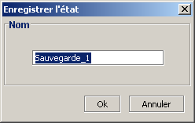
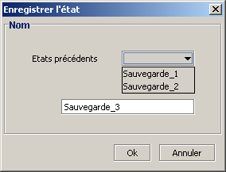
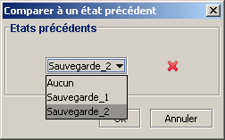
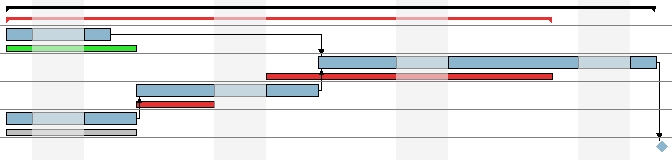

Suivi de l'avancement du projet
GanttProject permet d'effectuer un suivi de vos projets. À tout instant vous pouvez sauvegarder l'état
courant du projet. Ces états sont conservés par GanttProject et vous pouvez, par la suite comparer l'état courant
du projet à un état précédemment sauvé. Les différences entre les deux projets (le courant et l'état enregistré)
sont visibles sur le diagramme de Gantt.
Enregistrement d'un état
- lorsque vous voulez enregistrer l'état courant en vue d'une
comparaison ultérieure cliquez sur le bouton Enregistrer l'état
dans la barre d'outils ;
- une boîte de dialogue s'ouvre et vous propose de choisir un nom pour votre enregistrement :

- entrez le nom souhaité et validez.
Lorque vous enregistrer plusieurs états, vous avez la possibilité d'écraser un enregistrement précédent :
- cliquez sur le bouton Enregistrer l'état dans la barre d'outils ;
- une boîte de dialogue légérement différente de la première fois s'ouvre :

- si vous sélectionnez un état précédent dans la liste déroulante et que vous validez,
il sera remplacé par le nouvel état.
N.B. : Le bouton Enregistrer l'état est grisé si aucun changement n'a été fait dans le projet.
Comparer l'état courant à un état précédemment enregistré
Une fois que vous avez enregistré des états de votre projet, il est possible de comparer l'état courant
du projet à chaque état enregistré.
- cliquez sur le bouton Comparer à un état précédent
 dans la barre d'outils ;
dans la barre d'outils ;
- une boîte de dialogue s'ouvre :

- vous pouvez désormais voir les différences sur le diagramme de Gantt.
Voici un exemple d'une comparaison entre le projet courant et un enregistrement :

Le projet courant est affiché classiquement, de la même manière que d'habitude. Les différences entre le
projet courant et l'état sélectionné sont matérialisées par des rectangles moins épais
() qui se situent en dessous du rectangle de référence.
- : la tâche courante est en avance par rapport à l'état précédent ;
- : la tâche courante se termine à la même date que l'état prédédent ;
- : la tâche courante est en retard par rapport à l'état précédent.
Il est donc aisé de voir quelles sont les tâches qui sont en avance et celles qui sont en retard par
rapport à un état précédent. Par contre, les dépendances entre les tâches ne sont pas représentées entre
les tâches de comparaison.
Supprimer un état précédemment enregistré
Il est possible de supprimer des états précédemment enregistrés :
- cliquez sur le bouton Comparer à un état précédent dans la barre d'outils ;
- la boîte de dialogue s'ouvre :
- sélectionnez l'enregistrement que vous voulez supprimer ;
- cliquez sur la croix
 .
.